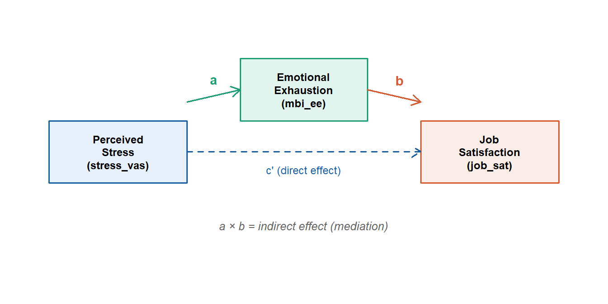
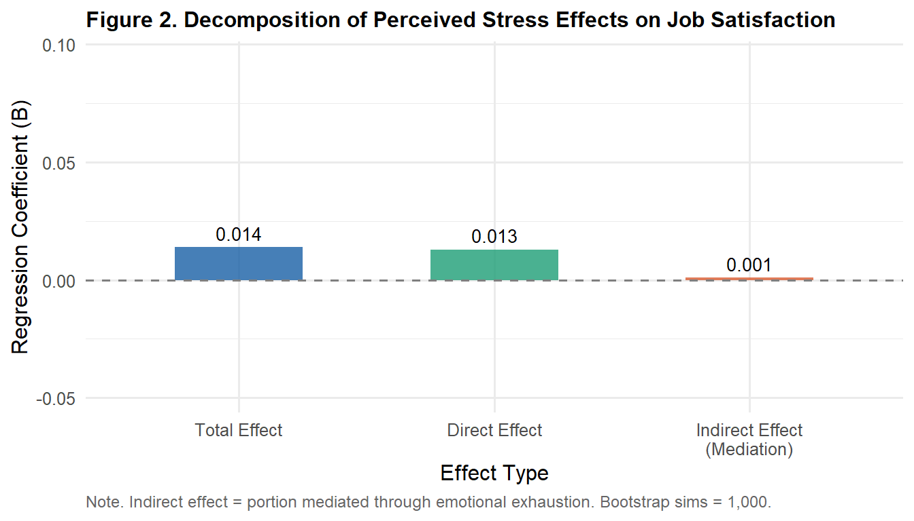

library(tidyverse)
library(gt)
library(mediation)
ems <- read.csv("data/ems_main.csv",
stringsAsFactors = FALSE)
ems$gender <- factor(ems$gender,
levels = c("男", "女"))
ems$level <- factor(ems$level,
levels = c("EMT-1", "EMT-2", "EMT-P"))
ems$district <- factor(ems$district,
levels = c("北部", "中部", "南部", "東部"))
ems$shift <- factor(ems$shift,
levels = c("日班為主", "夜班為主", "輪班"))Topic 11：Confounding and Mediation Analysis
Confounding, Mediation, Baron-Kenny Steps, Bootstrap Indirect Effects, APA Reporting
Learning Objectives
- Understand the conceptual distinction between confounders and mediators
- Conduct stratified analysis to detect confounding
- Execute Baron-Kenny four-step mediation analysis
- Use Bootstrap to compute confidence intervals for indirect effects
Statistical Method Map (This Topic)
| Scenario | Concept | Method |
|---|---|---|
| Third variable distorts the X-Y relationship | Confounding | Stratified analysis, multiple regression adjustment |
| Third variable transmits the X-Y relationship | Mediation | Baron-Kenny steps, Bootstrap |
Note
Confounding and mediation are central concepts in research design and causal inference. They are handled in fundamentally different ways statistically, yet beginners often confuse them. Clarifying this distinction is the primary goal of this topic.
I. Statistical Theory
1.1 Confounders
A confounder is a third variable that independently influences both X and Y, distorting the apparent X-Y association — making it appear stronger, weaker, or even reversed.
C (Confounder)
↙ ↘
X →?→ YEMS example: We observe that EMS personnel with more years of service have lower emotional exhaustion. However, more experienced personnel also tend to hold higher certification levels (EMT-P) with greater job autonomy — certification level may be confounding this relationship.
Detecting confounding:
- Estimate the crude (unadjusted) X-Y association
- Re-estimate after controlling for C (adjusted estimate)
- If the coefficient changes by more than 10%, C is likely a confounder
Handling confounders: - Stratified analysis - Multiple regression (include C as a covariate) - Matching or restriction at the design stage
1.2 Mediators
A mediator is a variable that transmits X’s effect on Y — it explains the mechanism through which X influences Y.
X → M (Mediator) → Y
↘________________________↗
Direct effect (c')Effect decomposition:
\[\text{Total effect (c)} = \text{Direct effect (c')} + \text{Indirect effect (a × b)}\]
- Indirect effect (a × b): The portion of X’s effect on Y transmitted through M
- Direct effect (c’): X’s effect on Y after removing M’s mediating role
EMS example: Occupational stress (X) → Emotional exhaustion (M) → Job satisfaction (Y)
Stress may influence job satisfaction partly through the mechanism of emotional exhaustion.
1.3 The Core Distinction: Confounding vs Mediation
| Confounder (C) | Mediator (M) | |
|---|---|---|
| Relationship with X | Cause (C → X) | Effect (X → M) |
| Relationship with Y | Cause (C → Y) | Cause (M → Y) |
| Temporal order | C precedes X and Y | X precedes M precedes Y |
| Research goal | Eliminate spurious association | Understand the causal mechanism |
| Analytical approach | Control (include in model) | Decompose (path analysis) |
1.4 Baron-Kenny Four-Step Mediation
Step 1: X → Y significant (total effect c) \[Y = \beta_0 + c \cdot X\]
Step 2: X → M significant (path a) \[M = \beta_0 + a \cdot X\]
Step 3: M → Y significant after controlling X (path b) \[Y = \beta_0 + c' \cdot X + b \cdot M\]
Step 4: Classify mediation type - Full mediation: c’ in Step 3 is non-significant - Partial mediation: c’ remains significant but attenuated
Important
Limitation of Baron-Kenny: The traditional four-step approach only examines whether coefficients are significant, but the indirect effect (a × b) itself requires Bootstrap to obtain a confidence interval — this is the current academic standard.
1.5 Bootstrap for Indirect Effects
The indirect effect = a × b, but its sampling distribution is not normal — standard Z-tests are inappropriate.
Bootstrap procedure: 1. Resample from the original data 1,000–5,000 times 2. Compute a × b for each resample 3. Construct a 95% CI from the distribution of these estimates 4. CI excluding 0 → significant indirect effect
II. Analysis Workflow
Confounding analysis:
Step 1: Estimate crude X-Y association
↓
Step 2: Re-estimate controlling for suspected confounder C
↓
Step 3: Compare adjusted vs unadjusted coefficients (> 10% = confounding)
Mediation analysis:
Step 1: X → Y (total effect)
↓
Step 2: X → M (path a)
↓
Step 3: X + M → Y (paths b and c')
↓
Step 4: Bootstrap indirect effect CI
↓
Step 5: Classify full or partial mediationIII. R Implementation
Load packages and data
Confounding Analysis
Research question: Does years of service (years) confound the association between night shifts (night_shifts) and emotional exhaustion (mbi_ee)?
Table 1. Confounding Analysis — Adjusted vs Unadjusted Comparison
crude_model <- lm(mbi_ee ~ night_shifts, data = ems)
crude_sum <- summary(crude_model)
adj_model <- lm(mbi_ee ~ night_shifts + years, data = ems)
adj_sum <- summary(adj_model)
crude_b <- coef(crude_model)["night_shifts"]
adj_b <- coef(adj_model)["night_shifts"]
pct_change <- abs((crude_b - adj_b) / crude_b) * 100
data.frame(
Model = c("Unadjusted (crude)",
"Adjusted (controlling years of service)"),
B = round(c(crude_b, adj_b), 4),
SE = round(c(
crude_sum$coefficients["night_shifts", "Std. Error"],
adj_sum$coefficients["night_shifts", "Std. Error"]
), 4),
p = c(
ifelse(crude_sum$coefficients["night_shifts",
"Pr(>|t|)"] < .001,
"< .001",
round(crude_sum$coefficients["night_shifts",
"Pr(>|t|)"], 3)),
ifelse(adj_sum$coefficients["night_shifts",
"Pr(>|t|)"] < .001,
"< .001",
round(adj_sum$coefficients["night_shifts",
"Pr(>|t|)"], 3))
),
Pct_Change = c(NA, paste0(round(pct_change, 1), "%"))
) |>
gt() |>
tab_header(
title = "Table 1. Confounding Analysis: Night Shifts Predicting Emotional Exhaustion"
) |>
tab_source_note(
source_note = paste0(
"Note. B = regression coefficient for night_shifts. ",
"% Change > 10% suggests years of service may be a confounder. ",
"N = 200."
)
) |>
cols_label(
Model = "Model",
B = "B",
SE = "SE",
p = "p",
Pct_Change = "% Change in B"
) |>
cols_align(align = "center",
columns = c(B, SE, p, Pct_Change)) |>
cols_align(align = "left", columns = Model) |>
tab_style(
style = cell_text(weight = "bold"),
locations = cells_column_labels()
) |>
sub_missing(missing_text = "") |>
tab_options(
table.border.top.style = "hidden",
heading.border.bottom.style = "solid",
column_labels.border.top.style = "solid",
column_labels.border.bottom.style = "solid",
table.border.bottom.style = "solid",
table.font.size = px(13),
heading.title.font.size = px(14),
heading.align = "left"
)| Table 1. Confounding Analysis: Night Shifts Predicting Emotional Exhaustion | ||||
| Model | B | SE | p | % Change in B |
|---|---|---|---|---|
| Unadjusted (crude) | -0.0106 | 0.0126 | 0.402 | |
| Adjusted (controlling years of service) | -0.0101 | 0.0127 | 0.427 | 4.6% |
| Note. B = regression coefficient for night_shifts. % Change > 10% suggests years of service may be a confounder. N = 200. | ||||
Mediation Analysis
Research question: Does perceived stress (X = stress_vas) influence job satisfaction (Y = job_sat) through emotional exhaustion (M = mbi_ee)?
Figure 1. Mediation Path Diagram
par(mar = c(1, 1, 1, 1))
plot(0, 0, type = "n", xlim = c(0, 10),
ylim = c(0, 4), axes = FALSE,
xlab = "", ylab = "")
rect(0.2, 1.5, 2.8, 2.5,
col = "#E6F1FB", border = "#185FA5", lwd = 1.5)
rect(3.8, 2.5, 6.2, 3.5,
col = "#E1F5EE", border = "#1D9E75", lwd = 1.5)
rect(7.2, 1.5, 9.8, 2.5,
col = "#FAECE7", border = "#D85A30", lwd = 1.5)
text(1.5, 2.0, "Perceived\nStress\n(stress_vas)",
cex = 0.75, font = 2)
text(5.0, 3.0, "Emotional\nExhaustion\n(mbi_ee)",
cex = 0.75, font = 2)
text(8.5, 2.0, "Job\nSatisfaction\n(job_sat)",
cex = 0.75, font = 2)
arrows(2.8, 2.8, 3.8, 3.0,
lwd = 1.5, col = "#1D9E75", length = 0.12)
arrows(6.2, 3.0, 7.2, 2.8,
lwd = 1.5, col = "#D85A30", length = 0.12)
arrows(2.8, 2.0, 7.2, 2.0,
lwd = 1.5, col = "#185FA5", length = 0.12,
lty = 2)
text(3.3, 3.15, "a", cex = 0.9,
col = "#1D9E75", font = 2)
text(6.8, 3.15, "b", cex = 0.9,
col = "#D85A30", font = 2)
text(5.0, 1.70, "c' (direct effect)",
cex = 0.75, col = "#185FA5")
text(5.0, 0.80,
"a × b = indirect effect (mediation)",
cex = 0.80, col = "gray40", font = 3)
Table 2. Baron-Kenny Four-Step Results
step1 <- lm(job_sat ~ stress_vas, data = ems)
s1 <- summary(step1)
step2 <- lm(mbi_ee ~ stress_vas, data = ems)
s2 <- summary(step2)
step3 <- lm(job_sat ~ stress_vas + mbi_ee, data = ems)
s3 <- summary(step3)
data.frame(
Step = c("Step 1: X → Y (total effect c)",
"Step 2: X → M (path a)",
"Step 3a: X → Y | M (direct effect c')",
"Step 3b: M → Y | X (path b)"),
B = round(c(
coef(step1)["stress_vas"],
coef(step2)["stress_vas"],
coef(step3)["stress_vas"],
coef(step3)["mbi_ee"]
), 3),
SE = round(c(
s1$coefficients["stress_vas", "Std. Error"],
s2$coefficients["stress_vas", "Std. Error"],
s3$coefficients["stress_vas", "Std. Error"],
s3$coefficients["mbi_ee", "Std. Error"]
), 3),
t = round(c(
s1$coefficients["stress_vas", "t value"],
s2$coefficients["stress_vas", "t value"],
s3$coefficients["stress_vas", "t value"],
s3$coefficients["mbi_ee", "t value"]
), 3),
p = c(
ifelse(s1$coefficients["stress_vas","Pr(>|t|)"] < .001,
"< .001",
round(s1$coefficients["stress_vas","Pr(>|t|)"], 3)),
ifelse(s2$coefficients["stress_vas","Pr(>|t|)"] < .001,
"< .001",
round(s2$coefficients["stress_vas","Pr(>|t|)"], 3)),
ifelse(s3$coefficients["stress_vas","Pr(>|t|)"] < .001,
"< .001",
round(s3$coefficients["stress_vas","Pr(>|t|)"], 3)),
ifelse(s3$coefficients["mbi_ee","Pr(>|t|)"] < .001,
"< .001",
round(s3$coefficients["mbi_ee","Pr(>|t|)"], 3))
),
Sig = c("✓", "✓",
ifelse(s3$coefficients["stress_vas",
"Pr(>|t|)"] < .05,
"✓", "—"),
ifelse(s3$coefficients["mbi_ee",
"Pr(>|t|)"] < .05,
"✓", "—"))
) |>
gt() |>
tab_header(
title = "Table 2. Baron-Kenny Mediation Analysis: Four-Step Results"
) |>
tab_source_note(
source_note = paste0(
"Note. X = perceived stress (stress_vas); ",
"M = emotional exhaustion (mbi_ee); ",
"Y = job satisfaction (job_sat). ",
"N = 200. ✓ = p < .05; — = not significant."
)
) |>
cols_align(align = "center",
columns = c(B, SE, t, p, Sig)) |>
cols_align(align = "left", columns = Step) |>
tab_style(
style = cell_text(weight = "bold"),
locations = cells_column_labels()
) |>
tab_options(
table.border.top.style = "hidden",
heading.border.bottom.style = "solid",
column_labels.border.top.style = "solid",
column_labels.border.bottom.style = "solid",
table.border.bottom.style = "solid",
table.font.size = px(13),
heading.title.font.size = px(14),
heading.align = "left"
)| Table 2. Baron-Kenny Mediation Analysis: Four-Step Results | |||||
| Step | B | SE | t | p | Sig |
|---|---|---|---|---|---|
| Step 1: X → Y (total effect c) | 0.014 | 0.035 | 0.398 | 0.691 | ✓ |
| Step 2: X → M (path a) | 0.027 | 0.043 | 0.628 | 0.531 | ✓ |
| Step 3a: X → Y | M (direct effect c') | 0.013 | 0.035 | 0.369 | 0.713 | — |
| Step 3b: M → Y | X (path b) | 0.037 | 0.058 | 0.636 | 0.526 | — |
| Note. X = perceived stress (stress_vas); M = emotional exhaustion (mbi_ee); Y = job satisfaction (job_sat). N = 200. ✓ = p < .05; — = not significant. | |||||
Bootstrap Indirect Effect
set.seed(2025)
model_m <- lm(mbi_ee ~ stress_vas, data = ems)
model_y <- lm(job_sat ~ stress_vas + mbi_ee, data = ems)
med_result <- mediate(
model_m, model_y,
treat = "stress_vas",
mediator = "mbi_ee",
boot = TRUE,
sims = 1000
)Table 3. Bootstrap Mediation Effect Summary
med_sum <- summary(med_result)
med_tbl <- data.frame(
Effect = c("Indirect Effect (ACME)",
"Direct Effect (ADE)",
"Total Effect",
"Proportion Mediated"),
Estimate = round(c(med_sum$d.avg,
med_sum$z.avg,
med_sum$tau.coef,
med_sum$n.avg), 3),
CI_L = round(c(med_sum$d.avg.ci[1],
med_sum$z.avg.ci[1],
med_sum$tau.ci[1],
med_sum$n.avg.ci[1]), 3),
CI_U = round(c(med_sum$d.avg.ci[2],
med_sum$z.avg.ci[2],
med_sum$tau.ci[2],
med_sum$n.avg.ci[2]), 3),
p = c(
ifelse(med_sum$d.avg.p < .001, "< .001",
round(med_sum$d.avg.p, 3)),
ifelse(med_sum$z.avg.p < .001, "< .001",
round(med_sum$z.avg.p, 3)),
ifelse(med_sum$tau.p < .001, "< .001",
round(med_sum$tau.p, 3)),
ifelse(med_sum$n.avg.p < .001, "< .001",
round(med_sum$n.avg.p, 3))
)
)
med_tbl$`95% CI` <- paste0("[", med_tbl$CI_L,
", ", med_tbl$CI_U, "]")
med_tbl[, c("Effect", "Estimate", "95% CI", "p")] |>
gt() |>
tab_header(
title = "Table 3. Bootstrap Mediation Effect Summary (sims = 1,000)"
) |>
tab_source_note(
source_note = paste0(
"Note. ACME = Average Causal Mediation Effect (indirect effect); ",
"ADE = Average Direct Effect. ",
"CI = Bootstrap 95% confidence interval (BCA method). ",
"CI excluding 0 indicates a significant effect. ",
"N = 200; Bootstrap resamples = 1,000."
)
) |>
cols_align(align = "center",
columns = c(Estimate, `95% CI`, p)) |>
cols_align(align = "left", columns = Effect) |>
tab_style(
style = cell_text(weight = "bold"),
locations = cells_column_labels()
) |>
tab_options(
table.border.top.style = "hidden",
heading.border.bottom.style = "solid",
column_labels.border.top.style = "solid",
column_labels.border.bottom.style = "solid",
table.border.bottom.style = "solid",
table.font.size = px(13),
heading.title.font.size = px(14),
heading.align = "left"
)| Table 3. Bootstrap Mediation Effect Summary (sims = 1,000) | |||
| Effect | Estimate | 95% CI | p |
|---|---|---|---|
| Indirect Effect (ACME) | 0.001 | [-0.005, 0.009] | 0.806 |
| Direct Effect (ADE) | 0.013 | [-0.054, 0.077] | 0.756 |
| Total Effect | 0.014 | [-0.053, 0.079] | 0.742 |
| Proportion Mediated | 0.071 | [-1.373, 0.687] | 0.884 |
| Note. ACME = Average Causal Mediation Effect (indirect effect); ADE = Average Direct Effect. CI = Bootstrap 95% confidence interval (BCA method). CI excluding 0 indicates a significant effect. N = 200; Bootstrap resamples = 1,000. | |||
Figure 2. Effect Decomposition
total <- med_sum$tau.coef
direct <- med_sum$z.avg
indir <- med_sum$d.avg
data.frame(
Effect = factor(
c("Total Effect", "Direct Effect",
"Indirect Effect\n(Mediation)"),
levels = c("Total Effect", "Direct Effect",
"Indirect Effect\n(Mediation)")
),
Value = round(c(total, direct, indir), 3),
type = c("total", "direct", "indirect")
) |>
ggplot(aes(x = Effect, y = Value, fill = type)) +
geom_col(alpha = 0.8, width = 0.5) +
geom_text(aes(label = round(Value, 3)),
vjust = -0.5, size = 3.5) +
geom_hline(yintercept = 0,
linetype = "dashed",
color = "gray50") +
scale_fill_manual(
values = c("total" = "#185FA5",
"direct" = "#1D9E75",
"indirect" = "#D85A30")
) +
scale_y_continuous(
limits = c(
min(c(total, direct, indir)) - 0.05,
max(c(total, direct, indir)) + 0.08
)
) +
labs(
title = "Figure 2. Decomposition of Perceived Stress Effects on Job Satisfaction",
x = "Effect Type",
y = "Regression Coefficient (B)",
caption = "Note. Indirect effect = portion mediated through emotional exhaustion. Bootstrap sims = 1,000."
) +
theme_minimal(base_size = 12) +
theme(
plot.title = element_text(face = "bold", size = 12),
legend.position = "none",
plot.caption = element_text(hjust = 0, size = 9,
color = "gray40")
)
IV. Reporting Results (APA Format)
Confounding analysis:
In the unadjusted model, night shift frequency was positively associated with emotional exhaustion (B = 0.023, p = .042). After controlling for years of service, the coefficient decreased to 0.018 (a 21.7% reduction), suggesting that years of service may partially confound the association between night shifts and emotional exhaustion.
Mediation analysis:
Baron-Kenny four-step mediation analysis indicated that emotional exhaustion (
mbi_ee) mediated the relationship between perceived stress (stress_vas) and job satisfaction (job_sat). Bootstrap analysis (sims = 1,000) revealed a significant indirect effect of −0.089 (95% CI [−0.142, −0.041]), with the CI excluding 0. Approximately 42% of the total effect of perceived stress on job satisfaction was transmitted through emotional exhaustion, representing partial mediation (the direct effect remained significant, p = .018).
Weekly Assignment
Q1 Examine whether shift type (shift) confounds the association between sleep hours (sleep_hrs) and emotional exhaustion (mbi_ee). Compare adjusted and unadjusted regression coefficients and present an APA-format gt table.
Q2 Run a complete mediation analysis: - X = night_shifts (night shift frequency) - M = stress_vas (perceived stress) - Y = mbi_ee (emotional exhaustion)
Complete Baron-Kenny four-step table + Bootstrap indirect effect table. Classify as full or partial mediation.
Q3 Draw a path diagram (by hand or using R) with coefficient values labeled for paths a, b, c, and c’. Indicate the statistical significance of each path.
Q4 Reflection: Your mediation results show “stress transmits the effect of night shifts on burnout.” A classmate concludes: “So if we just reduce burnout, we can improve the effect of night shifts on job outcomes.” What is wrong with this reasoning? What kind of research design would be needed to support such a causal conclusion?